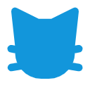

SponsorBlock
浏览器扩展 · 浏览器与扩展
SponsorBlock 更偏生活质量而不是隐私工具，众包赞助口播和片头的时点，让播放器自动跳过，免费开源。诚实的提醒是它依赖志愿者已经标注过某个视频，较新或冷门的片段可能没被覆盖，而且它是 YouTube 的使用便利，不是防追踪。装它是因为看得更舒服，不是因为它保护你；要保护，就配一个真正的拦截器。
域名sponsor.ajay.app
分类浏览器扩展 · 浏览器与扩展
属性—
收录2026-11-25
同类站点

Chrome 应用商店
脚本猫本站仅收录网站名称、简介与链接，不存储、不代理任何内容。
内容版权归 SponsorBlock 及各站点所有。